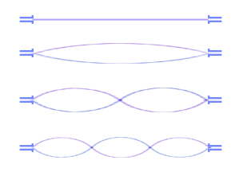

|
|||
|
| • Mechanika » Kinematyka, Dynamika, Praca, moc, energia, Grawitacja, Ruch obrotowy, Statyka, Relatywistyka • Fizyka molekularna i ciepło » Termodynamika, Gazy, Ciecze, Ciała stałe • Elektryczność i magnetyzm » Elektrostatyka, Pole elektrostatyczne, Prąd elektryczny stały, Magnetyzm, Elektromagnetyzm • Zjawiska falowe » Ruch drgający i falowy, Akustyka, Drgania i fale elektromagnetyczne, Optyka • Elementy fizyki wpółczesnej » Dualizm korpuskularno-falowy, Fizyka atomowa, Fizyka jądrowa • Astronomia » Astronomia • Zagadnienia matematyczne » Wektory, Pochodna funkcji, Logarytmy • Tablice » Jednostki wielkości fizycznych, Właściwości fizyczne, Właściwości elektromagnetyczne i falowe, Stałe fizyczne, Tablice matematyczne • O stronie » Autorzy, Bibliografia | |
|
Akustyka jest to nauka o powstawaniu dźwięków i ich rozchodzeniu się w ośrodkach materialnych, zwykle w powietrzu. W szerokim sensie tego słowa dźwiękiem nazywamy wszystkie fale sprężyste, oddziałujące na nasze organy słuchu, zawarte w przedziale częstotliwości od 16 do 20000Hz. Dźwięk jest falą podłużną, kulistą.
Fale dźwiękowe
Źródłami fal dźwiękowych mogą być pobudzone do drgań ciała stałe, np. struny skrzypiec, ludzkie struny głosowe, bęben lub membrana głośnika; drgające ciecze, np. fale morskie; drgające słupy powietrza, np. w piszczałkach organów lub instrumentach dętych. Mechanizm rozchodzenia się fali dźwiękowej w powietrzu przedstawia schematycznie rysunek poniżej: Drgania membrany zamykającej długą rurę powodują na przemian zagęszczanie i rozrzedzanie warstw zawartego w niej powietrza, nadając jego cząsteczkom ruch oscylacyjny do przodu i do tyłu. Podobnie jak w powietrzu fale dźwiękowe mogą się rozchodzić również w cieczach i ciałach stałych, lecz nie rozchodzą się w próżni. Można to łatwo sprawdzić umieszczając pod kloszem pompy próżniowej dzwonek elektryczny. W miarę rozrzedzania powietrza dźwięk dzwonka słabnie, aż wreszcie zupełnie zanika, mimo że dzwonek w dalszym ciągu działa. Prędkość rozchodzenia się fali dźwiękowej jest zależna od gęstości i własności sprężystych ośrodka, na przykład od ciśnienia i temperatury powietrza. W przypadku, gdy powietrze porusza się, fale dźwiękowe są unoszone wraz z nim i prędkość ich zależy dodatkowo od kierunku i prędkości tego ruchu. Prędkość rozchodzenia się fali dźwiękowej w powietrzu nieruchomym w warunkach normalnych wynosi 332 m/s, w wodzie 1450 m/s, w stali 4900 m/s, a w szkle 5600 m/s. W przypadku, gdy źródło fal porusza się z prędkością przekraczającą prędkość rozchodzenia się fali dźwiękowej, powstaje tzw. fala uderzeniowa. Stosunek prędkości przekraczającej prędkość dźwięku do prędkości dźwięku nazywamy liczbą Macha; wyraża ona, ile razy prędkość ciała (pocisku, samolotu, rakiety, itp.) jest większa od prędkości fali dźwiękowej w powietrzu. Cechy dźwięku
Ucho ludzkie posiada wrażliwość, umożliwiającą rozróżnienie następujących cech dźwięku: wysokości, barwy i natężenia. Fizyczną miarą wysokości dźwięku jest częstotliwość fali dźwiękowej, przy czym dźwięk jest tym wyższy, im wyższa jest częstotliwość. Do dokładnych pomiarów wysokości dźwięku służy analizator dźwięków, złożony z mikrofonu oraz lampy oscyloskopowej przekształcający odbieraną falę dźwiękową w wykres drgań. Dźwięki o jednakowej wysokości wydawane przez różne źródła wywołują odmienne wrażenia słuchowe. Różnice te spowodowane są charakterystycznym dla danego źródła dźwięku nakładaniem się na podstawowe drgania harmoniczne drgań harmonicznych o większych częstotliwościach i określone są mianem barwy dźwięku. Dźwięki o jednakowej wysokości, lecz różnej barwie różnią się kształtem krzywej drgań. Dźwięki wytwarzane przez źródła drgające ruchem harmonicznym, których wykres drgań ma kształt sinusoidy, nazywają się tonami. Miarą intensywności dźwięku jest jego natężenie.
I - natężenie fali P - moc fali s - pole powierzchni Badania wykazały, że natężenie dźwięku (o stałej częstotliwości) jest proporcjonalne do kwadratu amplitudy, dlatego dźwięki słabe różnią się od silnych przede wszystkim mniejszą amplitudą fali. Miarą czułości ucha ludzkiego jest próg słyszalności, czyli najmniejsze, wyczuwalne natężenie dźwięku, przy czym największa czułość odpowiada drganiom o częstotliwości od 1000 do 3000Hz. Dźwięki o bardzo dużym natężeniu wywołują w uchu wrażenie ucisku, a nawet bólu, przy czym maksymalne natężenie dźwięku, po przekroczeniu którego powstają te wrażenia, nosi nazwę progu bólu. - próg bólu Ponieważ czułość ucha ludzkiego zmienia się w zależności od natężenia słyszanych dźwięków, dla lepszej oceny subiektywnych wrażeń słuchowych wprowadzono w akustyce pojęcie głośności. Miarą głośności jest logarytm dziesiętnych stosunku natężenia I badanego dźwięku do natężenia dźwięku, odpowiadającego progowi słyszalności. Jednostką głośności jest bel. Źródła fal dźwiękowych
Źródłem dźwięku może być ciało wykonujące drgania. Ucho ludzkie odbiera wrażenia dźwięku słyszalnego, gdy częstotliwość drgań źródła zawarta jest w przedziale od 16Hz do 20 000Hz. DRGANIA STRUN  Jeżeli napiętą strunę zamocowaną na obydwu końcach pobudzimy do drgań, to wskutek odbicia się od drugiego zamocowanego końca powstanie fala stojąca, której węzły odpowiadają punktom zamocowania struny. Drgania struny wytwarzają w otaczającym ją powietrzu falę dźwiękową o określonej długości, równej podwojonej długości struny, a tym samym o określonej częstotliwości, zwanej częstotliwością podstawową. W drgającej strunie mogą być również wytworzone fale stojące o innych częstotliwościach, przy czym musi być spełniony warunek, aby ich węzły znajdowały się w punktach zamocowania struny. Pobudzona do drgań struna drga nie tylko z częstotliwością podstawową, lecz również z wieloma wyższymi częstotliwościami składowymi o różnych amplitudach. Drgania te nakładając się tworzą dźwięk o charakterystycznej barwie, zależnej od liczby i amplitud fal o częstotliwościach składowych. DRGANIA PRĘTA
Słupy powietrza znajdujące się w rurach lub w pudłach, można pobudzić do drgań. Są to drgania złożone podobne do drgań strun czy prętów. W słupie zamkniętym dwustronnie na końcach słupa występują węzły fali stojącej. Jak w każdym innym przypadku, ucho odbiera częstotliwość tonu podstawowego, zaś wyższe harmoniczne wpływają na barwę dźwięku. Pręt zamocowany w środku, to jakby dwa pręty zamocowane na jednym końcu. Drgania takiego pręta złożone są z tonu podstawowego i wyższych harmonicznych. Na zamocowanym końcu każdego drgania składowego jest węzeł, a na wolnym końcu strzałka. DRGANIA SŁUPA POWIETRZA
Pobudzenie pręta zamocowanego w jednym końcu powoduje powstanie fali stojącej, przy czym zamocowanego punkcie zamocowania pręta powstaje węzeł fali, zaś na jego końcu strzałka, a więc długość pręta odpowiada jednej czwartej części długości fali. W pręcie tym mogą być wzbudzone również fale stojące o mniejszej długości, przy czym musi być spełniony warunek, aby długość pręta odpowiadała ściśle nieparzystej liczbie ćwiartek fali. Przykładem źródła dźwięku w postaci pręta jest kamerton. Używa się go np. do strojenia instrumentów muzycznych. Na zamkniętym końcu słupa występuje węzeł, a na końcu otwartym strzałka fali stojącej. Przykładem wykorzystania drgań słupów powietrza jako źródła dźwięku są piszczałki. Źródłami dźwięku są także cienkie płyty o różnych kształtach zwane membranami. W membranie pobudzonej do drgań w wyniku nakładania się fali pierwotnej i fali odbitej od jej obrzeży powstają fale stojące, przy czym węzłami są linie, wzdłuż których membrana jest zamocowana. Oprócz drgań o częstotliwości podstawowej mogą wystąpić w membranie drgania o wielu innych częstotliwościach niebędących całkowitymi wielokrotnościami częstotliwości podstawowej. Dzięki temu, że membrany mogą odtwarzać drgania o różnych częstotliwościach stanowią one podstawowy element głośników, mikrofonów, słuchawek i innych przyrządów akustycznych. Odbijanie i pochłanianie fal dźwiękowych. Dudnienia
Fala dźwiękowa napotykając na swej drodze przeszkodę częściowo odbija się od niej, a częściowo przenika do drugiego ośrodka. Odbita fala dźwiękowa wraca do ucha obserwatora powodując powtórzenie wrażenia słuchowego, zwane echem. Niekiedy fale dźwiękowe odbijają się od kilku przeszkód, leżących w różnej odległości od obserwatora, który słyszy wówczas kilkakrotne echo. Jeżeli przeszkody znajdują się w niezbyt dużej od niego odległości, to fala odbita interferuje z falą pierwotną i powodując przedłużenie czasu trwania odbieranych wrażeń słuchowych zmniejsza ich wyrazistość. Zjawisko to występuje przede wszystkim w pomieszczeniach zamkniętych i jest zależne od ich wielkości i kształtu oraz od zdolności odbijającej znajdujących się w nich przedmiotów. Właściwy dobór tych czynników jest przedmiotem badań nauki zwanej akustyką architektoniczną. W wyniku nakładania się dwóch fal dźwiękowych o zbliżonych, lecz niejednakowych częstotliwościach występuje charakterystyczne zjawisko zwane dudnieniem, które polega na okresowym osłabianiu i wzmacnianiu natężenia dźwięków. Przyczyną tego zjawiska jest okresowy wzrost i spadek amplitudy fali wypadkowej, spowodowany nakładaniem się wychyleń interferujących fal. Częstotliwość dudnień, czyli częstotliwość występowania kolejnych wzmocnień i osłabień natężenia dźwięku, jest równa różnicy częstotliwości nakładających się fal. - częstotliwość dudnień Zjawisko Dopplera
Stojąc obok toru kolejowego i wsłuchując się w gwizd nadjeżdżającej lokomotywy, słyszymy wyraźnie spadek wysokości dźwięku, w chwili gdy przejeżdża ona obok nas. Gwizd oddalającej się lokomotywy jest niższy niż w czasie jej zbliżania się. Takie zjawisko nazywamy zjawiskiem Dopplera. Zjawisko Dopplera polega na tym, że jeśli źródło dźwięku porusza się względem obserwatora, to słyszy on dźwięk inny niż w rzeczywistości. Gdy źródło zbliża się, to obserwator rejestruje dźwięk wyższy od rzeczywistego; gdy się oddala, to rejestruje dźwięk niższy. Częstotliwość rejestrowana przez obserwatora jest taka sama jak częstotliwość wysyłana przez źródło. Rozważmy sytuację, gdy źródło porusza się z prędkością u. - początkowe położenie źródła - obserwator Z rysunku wynika, że: - droga przebyta przez źródło w ciągu okresu czyli: 
Zamiast długości fali możemy wstawić iloraz prędkości i częstotliwości fali: V - prędkość dźwięku - częstotliwość, jaką odbiera obserwator, gdy źródło zbliża się z prędkością u (u musi być mniejsze od prędkości dźwięku, aby wzór miał sens) Analogicznie można wyprowadzić wzór na częstotliwość, jaką obserwator odbiera, gdy źródło oddala się z prędkością u. Wzory na częstotliwość, jaką odbiera obserwator, gdy obserwator porusza się z prędkością W: - obserwator się zbliża - obserwator się oddala Wzory na częstotliwość, jaką odbiera obserwator, gdy obserwator porusza się z prędkością W i źródło porusza się z prędkością u: - źródło i obserwator zbliżają się do siebie - źródło i obserwator oddalają się od siebie Wyznaczanie prędkości dźwięku
Prędkość dźwięku w powietrzu wynosi około 330 m/s. Dokładniejsze jej określenie nie jest celowe, ponieważ prędkość dźwięku zależy od temperatury gazu i średniej masy cząsteczkowej gazu. Zmiany temperatury i wilgotności powietrza mogą więc powodować różnice prędkości dźwięku. Zmiany te nie przekraczają zwykle kilkunastu metrów na sekundę. Są jednak wystarczające na to, by na granicy warstw powietrza o różnej temperaturze i wilgotności mogły występować dość silne odbicia fal dźwiękowych. Odbicia dźwięku od chmur są na przykład przyczyną grzmotu - pogłosu towarzyszącego wyładowaniom atmosferycznym. Proste laboratoryjne metody wyznaczania prędkości dźwięku w gazach i ciałach stałych oparte są na pomiarach długości i częstotliwości fal stojących, powstających w słupach gazu i prętach. METODA QUINCKEGO - wyznaczanie prędkości dźwięku przy pomocy naczyń Quinckego I etap Naczynia Quinckego napełniamy wodą. Kamerton umieszczamy tuż nad krawędzią cienkiej rury i pobudzamy go do drgań. W tym samym czasie, gdy przystawiamy kamerton do dłuższej rury, gwałtownie opuszczamy grubsze naczynie w dół. Następują wówczas zmiany poziomu wody w naczyniach, tzn. w naczyniu wyższym poziom wody opada, a w grubszym wzrasta. Po kilku sekundach na pewnym poziomie wody w dłuższej rurze można usłyszeć zwiększenie natężenia dźwięku. Wtedy następuje rezonans. W momencie, gdy nastąpi rezonans, należy zaznaczyć wysokość słupa powietrza, przy której on nastąpił. II etap Drugi etap przebiega podobnie do pierwszego. Opuszczamy gwałtownie szerokie naczynie, ale jeszcze niżej niż w pierwszym przypadku. Gdy nastąpi ponowny wzrost natężenia dźwięku, czyli drugi rezonans, zaznaczamy wysokość słupa powietrza, przy której ów rezonans nastąpił. III etap - zestawienie wyników Korzystając z rysunków odczytujemy, że: Do wzoru na prędkość fali podstawiamy powyższą równość i uzyskujemy prędkość dźwięku: METODA KUNDTA - wyznaczanie prędkości dźwięku przy pomocy rury Kundta Rura Kundta jest to szklana rura o długości około jednego metra. Z jednej strony wkładamy do rury pręt z materiału, w którym chcemy wyznaczyć prędkość dźwięku. Pręt umocowany jest dokładnie w środku swojej długości. Z drugiej strony zatykamy rurę tłoczkiem. Pocieramy pręt szmatką zwilżoną denaturatem, aby wytworzyć w nim falę dźwiękową. W pręcie powstaje fala stojąca. l - długość rury Fala dźwiękowa przechodzi z pręta do powietrza zawartego w rurze i w rurze jest również falą stojącą. Następuje rezonans, więc: - częstotliwość fali stojącej w powietrzu w rurze - prędkość fali stojącej w powietrzu w rurze - prędkość fali stojącej w pręcie (szukana prędkość dźwięku w tym pręcie) Aby zaobserwować gdzie w rurze są węzły i strzałki wsypujemy zmielony korek. Następnie odczytujemy odległość od węzła do węzła (lub od strzałki do strzałki). d - odległość od węzła do węzła (lub od strzałki do strzałki). Podstawiamy za długości fal wyżej otrzymane wzory do wzoru na prędkość dźwięku: Rezonans akustyczny
Rozchodząca się w powietrzu fala dźwiękowa trafiając na powierzchnię jakiegoś ciała i wywierając na nią wskutek drgań cząsteczek powietrza okresowo zmienne ciśnienie wprawia to ciało w ruch drgający. W przypadku, gdy częstotliwość drgań wymuszonych jest równa częstotliwości drgań własnych ciała, natężenie drgań wzbudzonych znacznie wzrasta. Zjawisko to nazywamy rezonansem akustycznym. Ustawmy obok siebie dwa jednakowe kamertony. Uderzamy w kamerton A i słyszymy wydawany przez niego dźwięk. Po stłumieniu drgań kamertonu A, słaby dźwięk jest dalej słyszalny - wydaje go kamerton B. Oba kamertony mają taką samą częstotliwość drgań własnych, co jest warunkiem rezonansu. Zjawisko rezonansu zostało wykorzystane w budowie niektórych instrumentów muzycznych. Pudło skrzypiec stanowi na przykład rezonator, który dzięki odpowiednim kształtom drga wraz z zawartym w nim powietrzem przy wszystkich niemal częstotliwościach, wzmacniając drgania strun i stając się właściwym źródłem dźwięku.
|
| Copyright © 2003- fizyka.kopernik.mielec.pl |